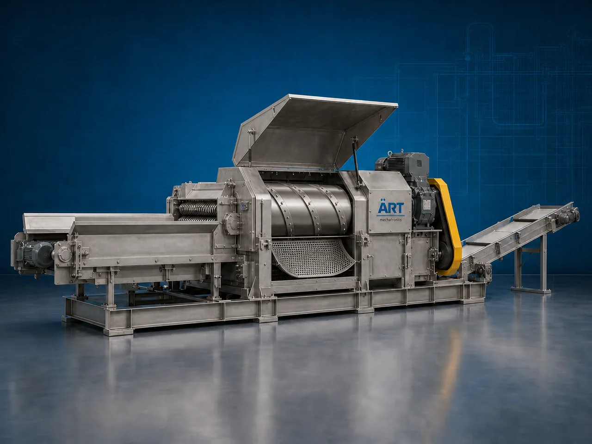

Chipper Machine (Industrial Chipping & Size Reduction System)
A Chipper Machine, also known as a Wood Chipper Machine, Biomass Chipper, Industrial Chipping Machine, or Material Size Reduction System, is an advanced industrial processing solution designed for chipping, cutting, shredding, crushing, size reduction, biomass preparation, and high-capacity material processing operations for wood, tree branches, bamboo, agro waste, coconut shells, biomass products, crop residues, pallets, and industrial materials.

About the Chipper Machine
Chipper systems are widely used for:
- Wood chipping operations
- Biomass preparation
- Agro waste size reduction
- Tree branch cutting
- Coconut shell chipping
- Bamboo processing
- Industrial waste reduction
- Fuel preparation systems
The machine improves:
- Material processing efficiency
- Biomass preparation productivity
- Fuel consistency
- Waste reduction efficiency
- Labor reduction
- Industrial automation performance
- Material handling productivity
Industrial chipper machines use:
- Heavy-duty chipping blades and drums
- High torque drive systems
- PLC and HMI automation controls
- Hydraulic feeding systems
- Rugged industrial construction
to automatically chip and process materials with superior consistency and high industrial productivity.
Chipper machines are widely used in industries such as:
Biomass industries Wood processing industries Agro industries Paper industries Fuel pellet industries Recycling industries Waste management industries Industrial manufacturing industries
where high-capacity chipping, biomass preparation, and continuous industrial processing are essential.
The machine is highly suitable for:
- Wood and branch chipping
- Biomass fuel preparation
- Agro waste processing
- Coconut shell size reduction
- Industrial waste management
- Biofuel production systems
ART Mechatronics offers high-performance chipper machines, engineered for continuous industrial operation, rugged chipping performance, high-capacity processing, and reliable long-term industrial productivity.
Working Principle of Chipper Machine
- 1. Material Feeding & Loading Wood, biomass, agro waste, or industrial materials are automatically or manually fed into chipping chamber for processing operation.
- 2. Chipping & Cutting Process Machine automatically chips, cuts, crushes, or shreds materials using heavy-duty rotating blades, drums, and high torque drive systems.
Precision synchronization ensures smooth material feeding and efficient chipping operations.
- 3. Chipping & Material Processing Operation Machine handles processing of: ✔ Wood logs ✔ Tree branches ✔ Bamboo ✔ Coconut shells ✔ Biomass materials ✔ Crop residues ✔ Agro waste ✔ Industrial materials
accurately and continuously.
- 4. Size Reduction & Biomass Preparation Process Machine performs: Chipping Cutting Crushing Shredding Biomass preparation Material size reduction
for efficient industrial material processing operations.
- 5. Intelligent Automation & Safety Integration Optional systems include: Hydraulic feeding systems Dust extraction systems Safety guarding systems Noise reduction systems Automatic discharge conveyors
- 6. Finished Material Discharge Processed chipped materials discharged automatically for: Biomass fuel preparation Pellet manufacturing Composting systems Storage silos Export shipment handling
Types of Chipper Machines
- 1. Wood Chipper Machine Designed for: ✔ Wood waste processing and branch chipping applications
- 2. Biomass Chipper Machine Suitable for: ✔ Biomass fuel preparation and agro processing systems
- 3. Drum Chipper Machine Uses: ✔ Heavy-duty industrial chipping operations
- 4. Disc Chipper Machine Designed for: ✔ Precision wood and biomass processing systems
- 5. Hydraulic Feed Chipper Machine Suitable for: ✔ High-capacity industrial material handling operations
- 6. Fully Automatic Industrial Chipping System Designed for: ✔ Complete industrial biomass processing automation lines
Industries Using Chipper Machines
🌳 Wood Processing Industry Wood waste reduction, branch chipping, and timber processing systems. ♻️ Biomass Industry Biomass fuel preparation, pellet production, and industrial processing systems. 🌾 Agro Industry Crop residue processing, agro waste management, and biomass preparation systems. 🪵 Paper & Pulp Industry Wood chip preparation and industrial pulp processing operations. ⚡ Biofuel Industry Biomass fuel production and renewable energy preparation systems. 🏭 Industrial Waste Management Industry Industrial waste reduction and recyclable material processing systems.
Features & Advantages
- High-capacity automatic chipping operation
- Heavy-duty industrial chipping blade systems
- Accurate and efficient material size reduction
- PLC and automation control systems
- Improves biomass preparation and waste handling efficiency
- Reduces manual processing dependency
- Supports multiple biomass and industrial materials
- Reliable long-term industrial performance
- Smooth integration with industrial biomass production lines
Technical Highlights
Machine Type: Chipper machine Industrial chipping system Biomass processing machine Material Compatibility: Wood logs Tree branches Bamboo Coconut shells Biomass materials Crop residues Industrial agro waste Integration: Rotary chipping systems Hydraulic feeding systems Automatic discharge conveyors Dust extraction systems Features: PLC control system Touchscreen HMI Heavy-duty steel construction High torque drive systems Noise reduction systems Applications: Wood chipping Biomass preparation Waste reduction Industrial recycling Biofuel preparation Material size reduction Automation: Semi-automatic Fully automatic industrial systems
Turnkey Chipping Solutions
ART Mechatronics offers: Complete industrial chipping systems Automatic biomass preparation solutions Industrial waste reduction systems Conveyor and feeding integration systems Installation & commissioning After-sales service & AMC
Why Choose Art Mechatronics
Expertise in industrial biomass and processing systems Customized chipping solutions for multiple industries High-performance and rugged chipping technology Advanced PLC and automation systems Proven industrial processing performance across sectors
Applications
Wood Processing Plants Biomass Processing Facilities Agro Waste Management Units Paper & Pulp Industries Biofuel Manufacturing Plants Industrial Recycling Industries
Related Process Equipment machines
Get pricing & specs for the Chipper Machine
Share the product, target capacity, current process and plant location. These details help our engineers discuss the right machine or line configuration.
One partner, from design to start-up
ART Mechatronics designs, manufactures, installs and commissions your Chipper Machine solution with regional presence in India, UAE and Thailand.